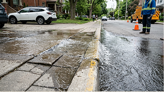

In riview
18h 59m left
PAM clean drinking water pipeline burst
flooding sidewalk in front of Cipete Raya MRT
Clean drinking water is bursting through the sidewalk pavement outside Jl. Fatmawati Raya No. 42 (RT 04 / RW 07, Cilandak Barat) right in front of Cipete Raya MRT. Clean water has been flooding the roadway for 4 hours, causing motorbikes to slip.
Resolution
Pipeline
01
Submitted
02
Verified
by
WargaReport
03
Dispatched
to
Agency
04
Fixed
&
Verified
Evidence on File
2 attachments (tap to expand)

incident_capture_camera.jpg
IMAGE
˙ 2.4 MB
Photographed live on-site
by resident camera.
0:12
quick_site_clip.mp4
VIDEO
˙ 4.8 MB
12-second horizontal pan
of incident.
Action History
Chronological updates from intake
router and field teams
Submitted
Fahrul Septiana
Nov 6, 05:09
PM
GMT+7
Citizen attached visual photo evidence and acoustic audio note.
Received
WargaReport Civic Router
Nov 6, 05:12
PM GMT+7
Priority: High. Clean water conservation target. 24h statutory countdown initiated.
In riview
Hendra Kurniawan
Nov 6, 06:39
PM GMT+7
Dispatched secondary valve isolation team from Cilandak maintenance station.
Tracking
Code
CMP-2026-8841
Assigned
Authority
Perumda PAM JAYA (Clean Drinking
Water)
Location
Jl. Fatmawati Raya No. 42 (depan Stasiun MRT Cipete Raya)
Cilandak Barat, Jakarta Selatan
Reported
On
Nov 6, 2026
Reported
By
Fahrul S.
Field
Officer
Hendra Kurniawan
Tim Reaksi Cepat PAM JAYA
[PAM-JKT-044]